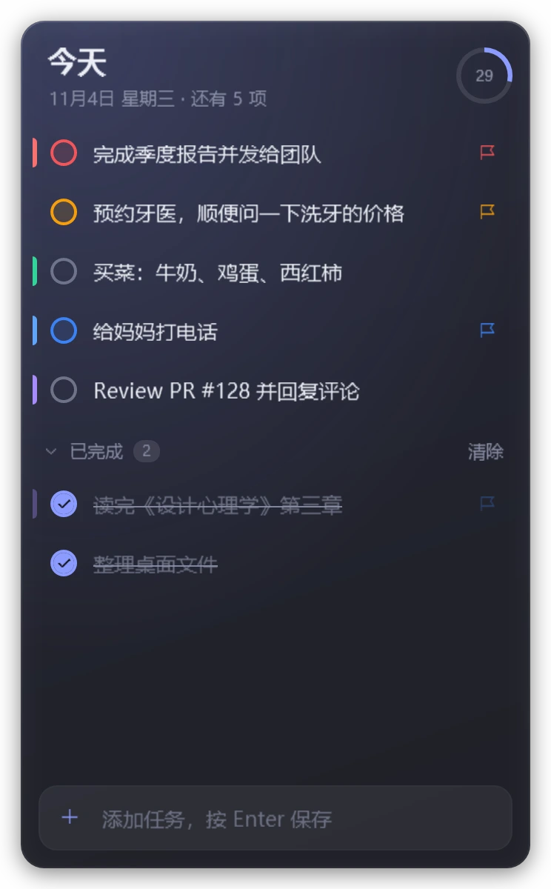
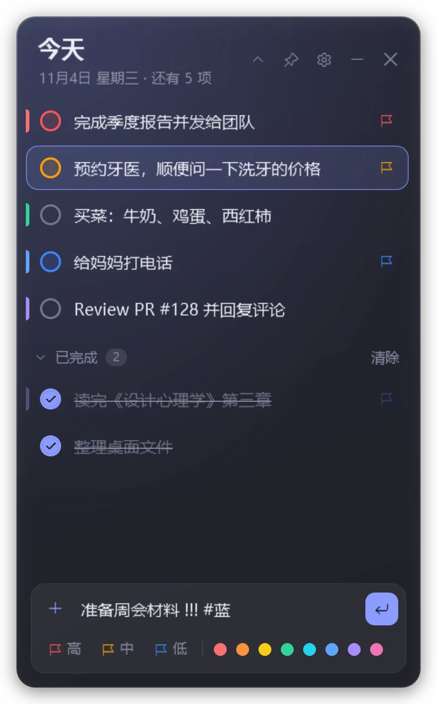
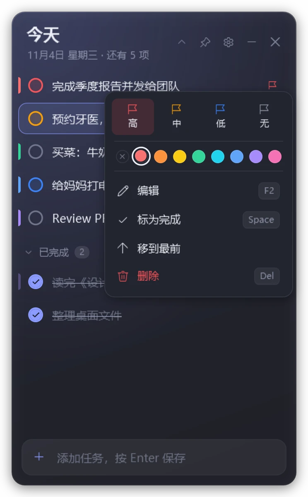
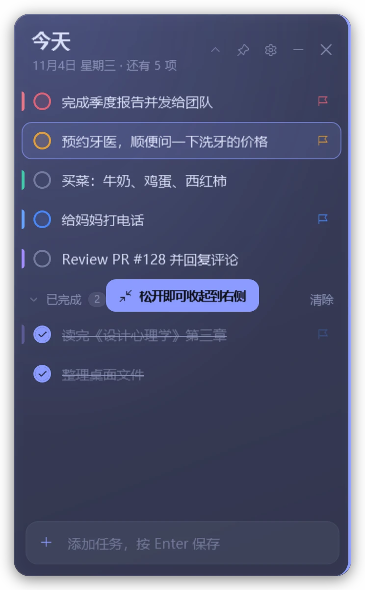
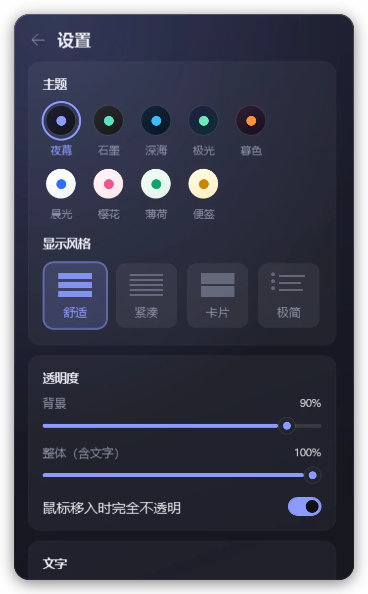
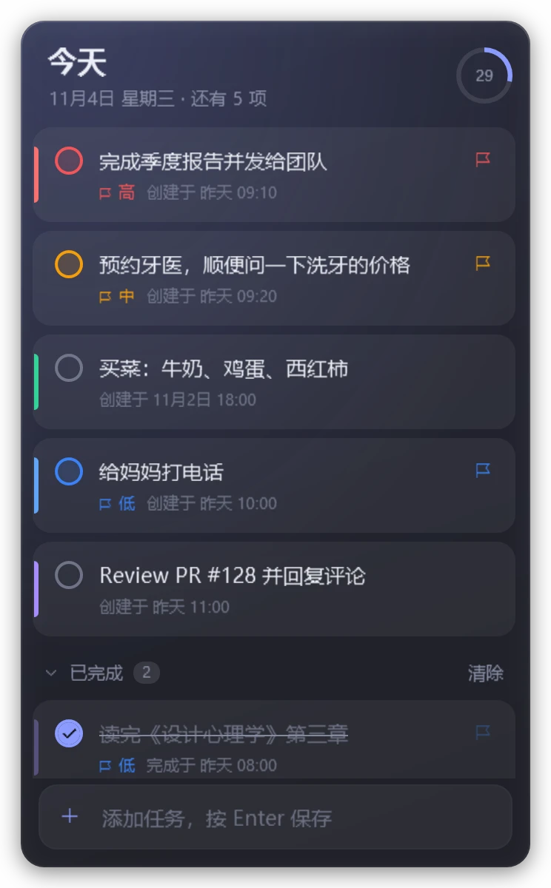

Windows 桌面待办 · v1.2
贴在屏幕边缘的
待办清单
无边框、可调透明度。拖到屏幕边缘就自动收起，鼠标一碰又滑出来。单个 exe，免安装。

演示
47 秒看完所有主要操作
添加、完成、右键菜单、换主题、调透明度、贴边收起、折叠成一条。视频由应用离屏逐帧渲染，画面就是真实界面。
功能
待在手边，又不挡路
贴边收起
拖到屏幕左、右或上边缘，松手就收成一条细边。鼠标碰到边缘滑出，移开自动收回，收起时始终在最上层。
两种透明度
背景透明度只改底色，文字保持清晰；整体透明度连文字一起淡。Ctrl + 滚轮随时调，鼠标移入可自动变实。
打字就能设置
在输入框里写 !!! 是高优先级，#蓝 是颜色标签。粘贴一段列表，每行自动变成一项。
键盘也能全程操作
方向键选择，空格完成，F2 编辑，Del 删除并可撤销，数字键设优先级，Ctrl + ↑↓ 调整顺序。
9 种主题，4 种风格
夜幕、深海、极光、樱花、便签……配上舒适、紧凑、卡片、极简四种列表风格。双击标题栏还能折叠成一条，只显示下一项。
轻，而且只在本地
一个 214 KB 的 exe，用系统自带的 .NET Framework 4.8 运行。数据存成本机的一个 JSON 文件，不联网、不需要账号。
试一试
挑一个配色，调到看得清桌面
右边是按应用样式做的网页仿真，配色和透明度与真实窗口相同。点圆圈可以勾选。
主题
显示风格
界面文字为应用当前的简体中文
截图
真实界面





快捷键
手不用离开键盘
下载
双击就能用
解压后运行 LiteTodo.exe。想换台电脑带着走，在 exe 旁边放一个名为 portable 的空文件，数据就跟着 exe 一起。
下载包即将发布。现在可以用下面的命令从源码构建：
git clone https://github.com/wuyao4/LiteTodo.git
cd LiteTodo
.\build.ps1 -Run # 输出 dist\LiteTodo.exe- 版本
- 1.2
- 大小
- 214 KB
- 系统
- Windows 10 1903+ / 11
- 运行库
- .NET Framework 4.8
- 数据位置
- %APPDATA%\LiteTodo
- 界面语言
- 简体中文
常见问题
用之前你可能想知道
需要安装什么吗？
不需要。Windows 10 1903 及以后、Windows 11 都自带 .NET Framework 4.8，直接运行 exe 即可。
数据存在哪里，会上传吗？
存在 %APPDATA%\LiteTodo\todo-data.json（便携模式下在 exe 旁边）。程序不联网，也没有账号。文件是普通 JSON，可以直接备份。
收起到边缘后怎么找回来？
把鼠标移到那条边缘停一下就会滑出；也可以单击托盘图标，或按 Ctrl + Alt + T。
为什么有的边缘没法收起？
任务栏所在的一侧、以及和另一块显示器相邻的一侧不能收起，否则收起的部分会盖住任务栏或跑到别的屏幕上。
怎么卸载？
退出程序后删除 exe；如果开过“开机自动启动”，先在设置里关掉；最后删除 %APPDATA%\LiteTodo 文件夹即可。